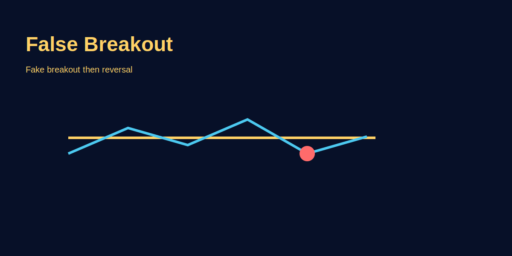

False Breakouts
Problem-based introduction
Breakouts vaakai profitable ho sakte hain, lekin false breakouts beginners ka common trap hain. Is article mein hum identify karne ke practical rules, filters aur GOLD (XAU/USD) examples share karenge.
What is a False Breakout?
Definition: Price breaks above resistance or below support, triggers breakout traders' stops/entries, then reverses back inside range. Breakout traders trapped; stop-losses hit.
Why it happens: Institutional players (banks, hedge funds) hunt liquidity above/below obvious levels. Retail traders cluster stop-losses just beyond key levels → easy target for big players to trigger, absorb liquidity, then push price opposite direction.
Alternative name: "Stop hunt," "liquidity grab," "fake breakout."
Anatomy of a False Breakout (GOLD Example)
Setup: GOLD consolidates 2020–2030 range for 3 days. Resistance 2030.00 touched 4 times; support 2020.00 held 5 times. Tight consolidation.
False breakout sequence:
- Hour 1 (Asia session, 9 AM IST): Price breaks 2030.50 (0.5 pip above resistance). Retail breakout buyers enter: "Finally breakout!" Target 2040+.
- Hour 2: Price pushes to 2031.00 (1 pip above). More buyers chase. Stop-losses from range shorts (placed at 2030.50) triggered → fuel for move.
- Hour 3 (London open, 1:30 PM IST): Price reverses sharply. Drops 2031 → 2028 in 10 min. Breakout buyers' stops (placed at 2029.00) hit. Loss: -2 pips to -3 pips per trader.
- Hour 4: Price continues down to 2020.00 (range low). Breakout traders stopped out; big players absorbed sell-side liquidity, now pushing down to target buy-side liquidity at 2020.00.
Result: Retail traders trapped long at 2030-2031; stopped at 2028-2029. Institutions profited from liquidity grab both sides (shorts above 2030, longs below 2020).
Why False Breakouts Succeed (Retail Psychology)
- FOMO: "Price breaking out, I'll miss the move!" → chase without confirmation.
- Textbook setups: Retail learns "trade breakouts" → everyone enters same side → predictable, exploitable.
- Tight stops: Stop-loss just beyond breakout level (e.g., long at 2030.50, SL 2029.50). Easy to trigger with small wick.
- Low-liquidity traps: Asia session low volume → easier for big player to push price 5-10 pips, trigger stops, reverse. London/NY liquidity makes manipulation harder.
Identification Checklist — Real vs False Breakout
| Factor | Real Breakout | False Breakout |
|---|---|---|
| Session timing | London/NY open or overlap | Asia session, pre-London hours |
| Candle close | Strong close beyond level (body, not wick) | Wick breaks, closes back inside range |
| Retest | Price retests broken level as new support/resistance, holds | No retest OR retest fails (breaks back inside) |
| HTF alignment | Daily/4H trend supports breakout direction | Counter-trend breakout (range in downtrend, bullish breakout = suspicious) |
| Momentum | Acceleration after break; strong follow-through | Weak follow-through; stalls 5-10 pips beyond level |
| Volume (forex: tick volume) | Volume spike on breakout candle | Low/declining volume on breakout |
| News catalyst | Fundamental driver (NFP, FOMC, CPI aligned) | No news; random breakout in dead hours |
Avoidance Strategies
1. Wait for Retest (Highest Success Rate)
Method: Don't chase initial breakout. Wait for price to pull back and retest broken level as new support/resistance.
GOLD example: Resistance 2030 breaks → price reaches 2033. Wait. If real breakout, price pulls back to 2030, bounces (support now), then continues up. Enter long on bounce at 2030, SL 2027 (below support), TP 2040. R:R 1:3+.
False breakout filter: If price breaks 2030, reaches 2033, but immediately drops back below 2030 without retest bounce → false breakout avoided.
Trade-off: Miss some fast breakouts (10-20%). But avoid 70-80% false breakouts. Net: better win rate, less emotional damage.
2. Session Filter (Timing-Based)
Rule: Only trade breakouts during London open (1:30 PM IST) or London/NY overlap (6:30–10:30 PM IST). Avoid Asia session breakouts (5:30 AM–1 PM IST).
Why: High liquidity = harder to manipulate. Asia low volume = easy false breakouts.
Exception: Major news during Asia (RBA, RBNZ, China data for AUD/NZD pairs) — then OK. Otherwise skip.
3. HTF Confirmation (Multi-Timeframe)
Rule: If trading 15M breakout, check 4H/Daily trend. Breakout direction must align with HTF trend.
Example: GOLD Daily downtrend. 15M chart: range 2020-2030 breaks up to 2033. HTF says down → likely false breakout (counter-trend). Skip or fade (sell at 2033).
Example 2: GOLD Daily uptrend. 15M range breaks up to 2033. HTF aligned → real breakout probability higher. Consider entry on retest.
4. Candle Close Confirmation
Rule: Wait for candle to close beyond level, not just wick touch. Body close confirms commitment.
GOLD example: Resistance 2030. 15M candle: wick hits 2032 (2 pips above), but closes 2029 (inside range) → false breakout signal. Skip.
Strong breakout: 15M candle opens 2028, closes 2033 (body fully beyond 2030) → higher probability real. Still wait for retest.
5. Fade the Fake (Advanced — Counter-Trend Play)
Strategy: Trade against false breakouts. When breakout shows false signals (Asia timing, weak follow-through, HTF divergence), enter opposite direction.
GOLD example: Range 2020-2030. Asia 9 AM: breaks 2031 (above resistance), stalls at 2032, candle closes 2030.50. Signs: Asia session, weak follow-through, wick rejection. Entry: Sell 2030.50, SL 2033.00, TP 2024.00 (mid-range). R:R 1:2.5.
Risk: If real breakout, loss = -2.5 pips. Requires experience reading false breakout patterns. Not for beginners.
Stop-Loss Placement (Minimize Fake-Out Damage)
- Tight SL trap: Long at breakout 2030.50, SL 2029.50 (1 pip below entry). Wick hunts your stop, then moves up. You're out, price goes without you.
- Solution: Place SL 5-10 pips beyond breakout level, below/above obvious zones. Long 2030.50, SL 2027.00 (3 pips below support 2030). Survives wick hunts. Wider SL = smaller position size to maintain 1-2% risk.
- Alternative: Use stop-limit orders (advanced) to avoid slippage on fake spikes. Risk: may not fill if volatility high.
Common False Breakout Patterns
Pattern 1: Range Expansion Fake
Tight range (2020-2025) → sudden spike to 2030 → immediate reversal to 2015. Volatility expansion triggers both sides' stops. Fade the extremes.
Pattern 2: News Spike Reversal
NFP releases; GOLD spikes 2030 → 2050 in 30 sec. Retail chases at 2045-2050. Institutions dump at top. Reverses 2050 → 2030 in 5 min. Wait 5-10 min post-news for dust to settle.
Pattern 3: Session Transition Trap
Asia closes, London opens. Asia painted breakout 2030 → 2033. London opens: liquidity floods, price dumps 2033 → 2022. Asia breakouts often don't hold into London. Skip Asia breakouts.
Pattern 4: Double Fake (Whipsaw)
Breaks up 2030 → 2033 → reverses to 2027 → then breaks down 2020 → 2015. Both breakout directions false. Solution: Wait for consolidation AFTER first fake before considering second breakout.
Psychological Traps
- Recency bias: Last 3 breakouts worked → assume next will too. Markets cycle; current period may favor fakeouts. Stay mechanical.
- Revenge trading: Stopped out by false breakout → immediately re-enter opposite direction without plan. Result: double loss. Take break after fake-out; review before next trade.
- Overconfidence: "I can spot fakes!" → trade every breakout with fade strategy. Reality: some ARE real; you get run over. Pick best setups only (Asia fakes with HTF divergence).
Practice Drill (30-Day Plan)
- Week 1: Mark 10 consolidation ranges on GOLD 15M chart. Screenshot. Next day, review which broke out real vs false. Note patterns: timing, candle close, HTF.
- Week 2: Forward test on demo: trade ONLY retests (not initial breakouts). 20 trades. Measure win rate.
- Week 3: Add session filter: only London/NY breakouts. 20 more trades. Compare Week 2 vs Week 3 win rate.
- Week 4: Introduce fade strategy on obvious Asia fakes (5 trades max). Small size. Record success rate.
- Result: By month-end, you'll have empirical data: retest strategy win rate, session impact, fade viability for your style.
Image-based examples (mandatory)
Annotated GOLD chart showing a false breakout and subsequent reversal.
Common Mistakes
- Entering immediately on the first candle beyond the level.
- Ignoring volume or higher-timeframe context.
- Placing stop-loss too tight (1-2 pips below breakout) — easy wick hunt target.
- Chasing Asia session breakouts without London/NY confirmation.
- Trading counter-trend breakouts (range in downtrend, bullish break = suspicious).
- Revenge trading after false breakout stop-out — emotional re-entry without plan.
Pro Tips
- Use limit orders on retest instead of chasing the breakout.
- Manage size and keep a tight plan: if breakout fails, accept small loss and move on.
- Session discipline: 80% false breakouts in Asia; 80% real breakouts in London/NY. Trade timing > strategy.
- Retest > chase: Miss 20% fast moves, avoid 70% fakes. Math favors patience.
- Record fake-outs: Screenshot every false breakout you spot; review monthly for patterns (timing, pairs, setup). Build personal database.
- Fade with proof: Only fade obvious fakes (Asia + HTF divergence + weak close). Don't fade every breakout blindly.
Risk Warning
False breakouts are part of market behaviour—always size positions and use stop-loss to prevent large drawdowns.
SEO FAQs
- 1. False breakout kaise pehchane?
- Asia session timing, weak candle close (wick breaks but body inside range), no HTF trend alignment, low volume, immediate reversal after break. Wait for retest confirmation.
- 2. Kya breakout chase karna kabhi safe hai?
- Rarely safe. London/NY session + HTF aligned + strong candle close = 60-70% success. Still, retest entry safer (70-80% success). Chase only if proven edge + strict size control.
- 3. GOLD false breakouts common hain kya?
- Yes, especially Asia session (5:30 AM–1 PM IST). Low liquidity = easy manipulation. London/NY overlap (6:30–10:30 PM IST) breakouts more reliable. Session timing critical.
- 4. Retest strategy kaise kaam karta hai?
- Price breaks resistance 2030 → hits 2033 → pulls back to 2030 → bounces (support now). Enter long on bounce at 2030, SL 2027, TP 2040. Avoids 70% fakes; misses 20% fast moves. Net: better win rate.
- 5. Stop-loss placement fake-outs ke liye?
- Not tight (1-2 pips = wick hunt target). Place 5-10 pips beyond obvious level. Long at 2030 breakout → SL 2027 (below support), not 2029. Survives manipulation wicks. Adjust position size to maintain 1-2% risk.
- 6. Kya false breakout ko fade kar sakte hain (opposite trade)?
- Advanced strategy. Asia fake (breaks 2031, stalls 2032, closes 2030.5) → sell 2030.5, SL 2033, TP 2024. High risk; requires pattern recognition. Beginners: avoid. Practice 50+ demo trades first.
- 7. News spike breakouts real hain ya fake?
- Often fake. NFP/FOMC: price spikes 20 pips in 30 sec → retail chases → reverses 5 min later. Wait 5-10 min post-news for spread normalization and direction clarity. Patience saves capital.
- 8. HTF (Higher Timeframe) check kyun zaroori hai?
- Counter-trend breakouts (15M bullish break in Daily downtrend) = 70-80% fake. With-trend breakouts (15M bullish in Daily uptrend) = 60-70% real. HTF filter doubles success rate.